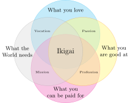

Semana 2. Diseño Asistido por Ordenador
Regreso a Fab Academy 2024. Fran Sanchez
| modela (raster, vector, 2D, 3D, renderizado, animación, simulación, ..) un posible un proyecto final, comprime tus imágenes y videos, y publica una descripción con tus archivos de diseño en tu página. |
Objetivos de la semana
La semana pasada ya empecé mal. No me dió tiempo a hacer casi nada.Se me había olvidado que nunca sigo los consejos que doy.
Esta semana voy a ser más disciplinado. Lo primero que voy a hacer es definir lo que quiero hacer y asignar una fecha límite para cumplirlo. Esta es una de mis semanas favoritas porque me encanta probar software nuevo. por orden de preferencia voy a hacer:
- OpenFOAM. 1 día de dedicación
- Quiero aprender a crear geometrías en Blender.
- Quiero hacer una simulación de un perfil alar.
- Quiero hacer una simulación de fluido incompresible.
- Quiero aprender a visualizar resultados en Paraview
- FreeCAD. 1 día de dedicación. Tengo una relación de amor-odio con FreeCAD. Lo uso, lo odio, después lo echo de menos, lo vuelvo a usar, y otra vez lo odio. Voy a ver si logro enamorarme de Ondsel. En particular, estas son las cosas que me gustaría hacer esta semana:
- Probar otra vez todas las herramientas, a ver si han mejorado.
- Probar el Assembly Workbench.
- Probar TechDraw Workbench.
- Probar una simulación en Calculix.
- Espero integrar algún dispositivo de hardware para controlar parámetros.
- Espero poder instalar y probar el add-on de Pieter Hijma
OSH Automated Documentation.
- Blender. 2 dias de dedicación. Aquí tengo mucho trabajo.
- Aprender tanto como pueda de Geometry Nodes.
- Renderizar en tiempo real con EEVEE.
- Controlar una cámara virtual con el teléfono.
- Crear una simulación física.
- Crear una animación con Grease Pencil.
- Explorar la interfaz del puerto de serie en Blender.
- JavaScript. 1 día de dedicación
- Quiero usar ThreeJS para poder visualizar modelos 3D en la página web.
- Quiero aprender más sobre D3JS para hacer visualizaciones de datos y cartografía.
- Inteligencia Artificial. 1 día de dedicación
- Explorar el estado de los modelos generativos en 3D
- Leer el artículo sobre generación de modelos 3D a partir de grandes modelos de lenguaje (LLM).
- Usar Midjourney o similar para generar algunas imágenes del proyecto final.
- Línea de comandos. 1/2 día de dedicación
- Voy a integrar Imagemagick en los script de generación de documentación para que automatice la compresión de imágenes.
- También voy a integrar ffmpeg en los script para comprimir video.
- Audio. 1/2 día de dedicación
- Voy a tomarme un poco tiempo para aprender algo de Sonic Pi.
Creo que me he pasado. Si hago 1/4 parte ya puedo estar contento.
OpenFOAM
La ecuación de Navier-Stokes es un conjunto de ecuaciones diferenciales parciales que describen el movimiento de los fluidos. En forma vectorial y en un sistema de coordenadas tridimensional, las ecuaciones de Navier-Stokes para un fluido incompresible son:
\rho \left( \frac{\partial \mathbf{v}}{\partial t} + (\mathbf{v} \cdot \nabla)\mathbf{v} \right) = -\nabla p + \mu \nabla^2 \mathbf{v} + \rho \mathbf{g}
donde:
- \rho es la densidad del fluido,
- \mathbf{v} es el vector de velocidad del fluido,
- t es el tiempo,
- p es la presión,
- \mu es la viscosidad dinámica del fluido,
- \nabla es el operador nabla,
- \nabla^2 es el laplaciano,
- \mathbf{g} es el vector de la aceleración debida a la gravedad.
Esta ecuación describe la conservación de la cantidad de movimiento y la relación entre la presión, la viscosidad y la aceleración del fluido. Resolver estas ecuaciones puede ser complejo, especialmente en situaciones no lineales o turbulentas. Si el fluido es compresible, la cosa se complica un poco más porque \rho ya no es constante sino que puede variar en el tiempo y en el espacio.
\frac{\partial \rho}{\partial t} + \nabla \cdot (\rho \mathbf{v}) = 0
No se pueden resolver estas ecuaciones de forma analítica, se necesitan usar métodos numéricos. Ahí es donde interviene OpenFOAMOpen Source Field Operation and Manipulation
, un conjunto de programas de código abierto para la simulación numérica de fluidos. OpenFOAM no tiene interfaz gráfica. Todos los archivos, incluyendo la geometría, condiciones iniciales, condiciones de contorno, modelo, etc. se introducen mediante archivos de textoSi usas una interfaz gráfica pronto estarás en el paro. ¿Por qué crees que se invierte tanto en entrenar modelos de lenguaje?
.
Simulación de un perfil alar
en desarrollo
Vuelo en un avión ICP Savannah S con perfil de ala NACA-65018Los números son parámetros que se pueden introducir en ecuaciones para generar la sección transversal y calcular sus propiedades.
modificado. No es muy rápido, pero puede despegar y aterrizar en distancias muy cortas y volar a muy poca velocidad sin entrar en pérdidaCondición que se da cuando el ala pierde sustentación al superar el ángulo de ataque crítico.
. Cerca del borde de ataque del ala, hay unas piezas de plástico llamadas generadores de vortex. Su función es generar micro-turbulencias para evitar que la capa límite se despegue del ala. El objetivo en OpenFOAM es simular una sección del ala con y sin generadores de vortex y comprobar la diferencia.

Fluido incompresible
en desarrollo
Ondsel
en desarrollo
Blender
en desarrollo
Javascript
en desarrollo
Inteligencia artificial
Hemos avanzado, pero aun nos queda bastante camino. Hoy 5 de febrero de 2024 he preguntado a las 4 inteligencias artificiales más conocidas (ChatGPT 3.5, ChatGPT4 Turbo, Bing y Bard) que hagan algo muy sencillo:
Tengo dos observaciones y una conclusión: La primera observación es que ninguna de las 4 inteligencias ha hecho un buen trabajo. La segunda observación, también interesante, es que no puede distinguirse que una sea especialmente mejor que la otra. A pesar de que algunos modelos son técnicamente mejores que otros. La conclusión es pues, que parece claro que las “inteligencias” artificiales tienen poca o nula capacidad de razonamiento en areas donde no han sido entrenadas. Incluso conociendo las reglas de ejecución del diagrama, no han sido capaces de dibujar 4 círculos y unas pocas etiquetas.

Como curiosidad Bard (modelo Gemini Pro) ni siquiera fue capaz de generar código correcto. Tuve que pasar el código de Bard a Bing para que lo corrigiese. Supuestamente Bing es ChatGPT4, pero yo creo que la fotocopia salió borrosa. Estos modelos necesitan gran cantidad de datos de entrenamiento para reconocer patrones, no razonan en el sentido humano. Podría haber pasado toda la tarde intentando que los modelos muevan los círculos a su posición correcta. Hay gente que lo hace, pero me parece absurdo. Existe un gran esfuerzo para lograr una IAG que sea capaz de razonar como un humano. No obstante, por ahora habrá que seguir entrenando a los modelos en las áreas que deseemos. Ese es uno de mis objetivos en Fab Academy.
Imágenes
en desarrollo
Imagemagick
Sirve para infinidad de cosas. Puedes añadir una marca de agua a una imagen.
O combinar dos o más imágenes horizontalmente de modo que:
a) Tengan la misma altura
b) Las imágenes estén separadas por un espacio transparente
La fotografía compuesta del avión y el perfil alar se han hecho así.
montage savannah.jpg naca65018.png -geometry +5+0 -tile 2x1\
-resize x800 -background none -gravity West -extent x800 avion.webpPGF/TikZ
TikZ es un paquete para \LaTeX que permite crear figuras y gráficos. Solía usarlo en la universidad. He creado la figura de Ikigai que usaré en la página del proyecto final.
Como veis, estoy usando cualquier cosa que use código para generarse.
 → Código fuente
\documentclass[tikz]{standalone}
\begin{document}
\begin{tikzpicture}
% Circles
\fill[cyan!45, opacity=0.5, draw=cyan] (0,1) circle (2cm);
\fill[magenta!45, opacity=0.5, draw=magenta] (0,-1) circle (2cm);
\fill[yellow!45, opacity=0.5, draw=orange] (1,0) circle (2cm);
\fill[black!15, opacity=0.4, draw=gray] (-1,0) circle (2cm);
% Labels
\node[font=\small, align=center] at (-2.8,0) {What the\\ World needs};
\node[font=\small, align=center] at (2.8,0) {What you\\ are good at};
\node[font=\small, align=center] at (0,-2.4) {What you\\ can be paid for};
\node[font=\small] at (0,2.4) {What you love};
% Small Labels
\node[font=\tiny] at (1.35,-1.2) {Profession};
\node[font=\tiny] at (1.35,1.2) {Passion};
\node[font=\tiny] at (-1.35,-1.2) {Vocation};
\node[font=\tiny] at (-1.35,1.2) {Mission};
% Title
\node[font=\large] at (0,0) {Ikigai};
\end{tikzpicture}
\end{document}Para generar la figura svg hay que ejecutar el comando:
pdflatex ikigai.tex && pdf2svg ikigai.pdf ikigai.svg
Audio y video
en desarrollo
ffmpeg
Muy útil para infinidad de operaciones. Antes era difícil aprenderse los comandos, pero ahora se los puedes preguntar a un modelo de lenguaje.
yt-dlp
Uso esta utilidad de terminal para bajarme los videos de Fab Academy alojados en Youtube o Vimeo. Por ejemplo:
Manim
Seguramente habrás visto algún video de 3blue1brown.
Manim es la biblioteca de Python que él mismo creó para generar sus animaciones.
Aquí mi hello world!: manim -pqh hello_manim.py AnimatedSquareToCircle
from manim import *
class AnimatedSquareToCircle(Scene):
def construct(self):
circle = Circle() # create a circle
square = Square() # create a square
self.play(Create(square)) # show the square on screen
self.play(square.animate.rotate(PI / 4)) # rotate the square
self.play(
ReplacementTransform(square, circle)
) # transform the square into a circle
self.play(
circle.animate.set_fill(BLUE, opacity=0.2)
) # color the circle on screenSonic Pi
Estoy creando una sesión usando algunas muestras de audio de Fab Academy.
No puedo desvelar más.
use_bpm 130
live_loop :met1 do # this is a metronome to sync the beats
sleep 1
end
define :pattern do |pattern|
pattern.ring.tick == "x"
end
live_loop :kick, sync: :met1 do
a = 2
sample :bd_haus, amp: a, release: 8, cutoff: 110 if pattern("x-----x---x--x--")
sleep 0.25
end
live_loop :clap, sync: :met1 do
sleep 1
sample :perc_snap, amp: 1
sleep 1
end
live_loop :hhc1, sync: :met1 do
sample :drum_cymbal_closed, amp: 0.5 if pattern("x-x-x-x-xxx-x-x-")
sleep 0.125
endConclusiones
en desarrollo
Los participantes de Fab Academy son héroesLos instructores también son héroes. Sobretodo los de Puebla.
. Había olvidado completamente lo duro que es el curso. Reconozco que me está costando. Hoy es domingo y no he hecho ni el 5% de lo que tenia pensado. Además sigo haciendo cambios en la plantilla y cuando arreglo una cosa, rompo otra.
Me alegro de estar participando de nuevo como un estudiante. Sigo sonriendo desde la última fila cuando os sacan a la pizarra, pero no tanto. Soy más humano. Esta experiencia mejorará mi habilidades sociales como instructorTengo un estilo educativo algo peculiar. Podrías decir que me parezco más a Homelander que a Superman.
.
Estoy particularmente orgulloso de estar poniendo en práctica habilidades de ingeniería que creía olvidadas. Fab Academy ha sido la motivación que necesitaba. Creo que combinando estas competencias con el poder de la IA, se pueden lograr resultados asombrosos.
Solución a la pregunta de la sección de inteligencia artificial: De izquierda a derecha: GPT3.5, GPT4, Bing y Bard. ¿Acertaste?